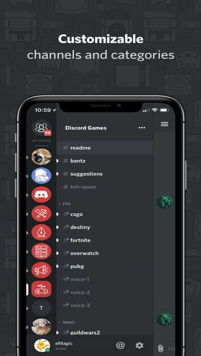
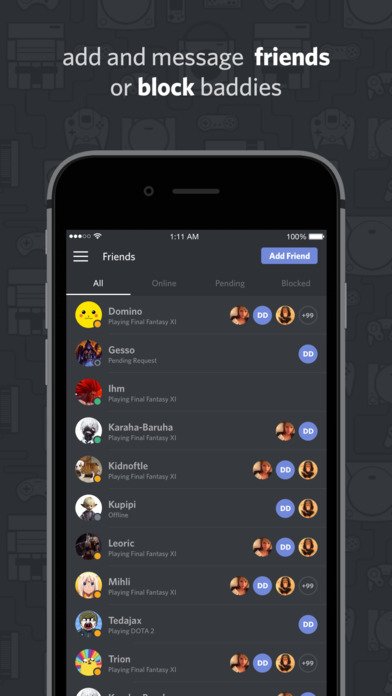

Discord uses the metaphors of servers and channels similar to Internet Relay Chat even though these servers do not map to traditional hardware or virtual servers due to its distributed nature. A user can create a server on Discord, managing its public visibility and access, and create one or more channels within this service. Within a server, depending on access controls, users can create channels within a category framework, with the visibility and access on the channels also customizable to the server. One such customization is the ability to mark channels "NSFW" (Not safe for work), which forces first-time channel viewers to confirm that they are over 18 and willing to see such content. In addition to normal text-based channels, Discord servers can create voice-chat channels.
